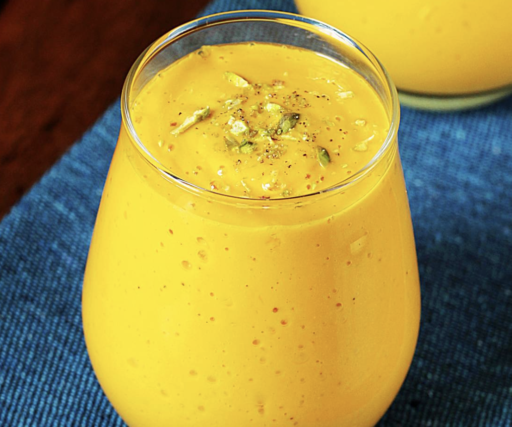

Mango Lassi
Home

Image credit: Swasthi's Recipes
Description
Lassi is a yogurt-based beverage with a smoothie-like consistency. The word 'lassi' for the drink is a borrowing from Hindi, first attested in 1882; its ultimate origin is unclear, and has been suggested as derived ultimately from Sanskrit lasya (stickiness) or rasah (juice).
Lassi is prepared by blending yogurt, water, and spices. In Punjab, where the drink originated, the yogurt is traditionally made from water buffalo milk. Variations include the addition of salt, cumin or cardamom. Lassi is traditionally served in a clay cup known as kulhar. In the 21st century, lassi is commonly consumed in many world regions.
Fruits such as mangos and strawberries may be added to the yogurt-water mixture to yield, for example, mango lassi and strawberry lassi.
Ingredients
- 1 and 1/2 cups (280 grams) of chopped mangoes or 1 cup (240 grams) of canned sweetened mango pulp
- 3/4 cup of plain yogurt (175 grams)
- 3/4 cup of milk (180 milliliters) or water and/or 4 ice cubes or yogurt whey
- 1 and 1/2 to 3 tablespoons (18 to 36 grams) sugar (use according to your preference or maple syrup)
- 1/4 teaspoon cardamom powder
- 1 pinch of saffron and 1 tablespoon of chooped nuts such as pistachios or almonds to garnish (optional)
Steps
- Chill all the ingredients.
- Add mangoes, sugar, cardamom poweder and milk (or water or ice cubes) to a blender jar. If you're not using a high speed blender, add the yogurt later.
- Blend until very smooth. Make sure there are no mango fibers left.
- Add the yogurt.
- Blend just until smooth, avoid over blending, as it can sometimes become slimy.
- Taste test and adjust the ingredients. If you like it sweeter or prefer more mango flavor, simply add more mangoes. To cut down the sour taste, either add milk or cream. If you want it to be slightly runny, pour more milk or ice cubes and blend. It should be thick, yet of pouring and drinking consistency.
- Pour mango lassi to serving glasses and garnish with copped pistas or almonds. If you want it colder, chill it for an hour before serving.
Recipe credit: Swasthi Shreekanth